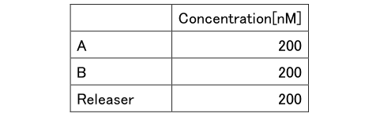

Experiment
Experiment of DNA origami
Material&Methods
- Annealing
- Centrifugation experiment
- Preparation of 1% agarose gel
- Electrophoresis
The mixture of DNA origami is annealed from 95 ℃to 4℃ as shown in table 1.
Table2: Annealing program for DNA assemble
(Materials)
Amicon Ultra Centrifugal Filter (Merck KGaA Co.)
Mix DNA Origami
1xTAE/Mg2+ buffer solution
(Exprimentmethod)
1. 5 mix origami tubes solutions are added 50μL respectively into the amicon, and is centrifuged for 1000rpm.
2. The centrifuged solution is then washed by adding 50 μL of water and buffer respectively and repeated 3 times.
3. Amicon is inverted into a new tube and centrifuged to extract the origami formed.
(Materials)
0.2g agarose+200ml TBE buffer solution
(Exprimentmethod)
1. The mixed reagent is weighed and inserted into a conical flask.
2. The lid of the flask is then wrapped and heated by using a microwave until bubbles are formed.
3. The UV gel tray is set on the gel casting system.
4. The prepared solution is then poured into the cast.
5. The air between the gel casting system and the UV gel tray is removed by using a micropipette.
6. The comb is the set into the gel。
7. The gel is left for 30 minutes until solidify.
(Materials)
DNA marker
Mix DNA origami
(Exprimentmethod)
Two different concentration of mix DNA origami samples to confirm the present of DNA origami. The concentration of A is higher than B.
1. 5μL marker is inserted into the left gel hole.
2. The 1μL prepared mix DNA origami solution is mixed with the 1μL of gel loading dye.
3. The solution A and Bis added respectively into the third and sixth holed from the left.
4. The scaffold solution is added to the right hole of the gel as a control variable.
5. The electrophoresis is started and left for 30 minutes.
6. The reaction for the electrophoresis is then observed by using Mupid2+
7. The observation result is shown in figure 1.
Result
In this experiment, the present of DNA origami in the sample is observed by using gel electrophoresis and the shape of the origami is confirmed by using TEM. The result for the electrophoresis is shown in figure 1.

Figure1: Gel electrophoresis observation result
The top band of marker solution indicates a molecular weight of 1000. This marker is compared to the scaffold solution and is shown that that DNA origami solution have molecular weight of more than 1000. Since the DNA origami band can be seen higher than scaffold, we concluded that the DNA origami is presents in the samples.
Also, we observed the structure of DNAo by using a reagent with a Transmission Electron Microscope (TEM).

Figure1: Origami observed with TEM
From the above results, we succeeded to make the origami because we could see the same structure that we had expected.
Experiment of DNA strand displacement reaction
Material&Methods
The DNA shown in the above scheme was designed using NUPACK, which can evaluate secondary structure.
Table1: Sequence of DNA
・ Experiment of strand displacement reaction
- Experimental concentration
- Annealing
- Fluorescence intensity measurement
DNA sequences that shown above was diluted at 20 ° C with Tris-EDTA buffer supplemented with 1.25% MgCl until the following concentrations on table 1 and 2 are obtained.
Table2:
Table3:
Table4:
Using a thermal cycler (ASTEC325: GeneAtlas), Gate is heated to 95 ° C and annealed at 95-20 ° C (-1 ° C / min).
Fluorescence intensity was measured at 1 minute intervals using a fluorescence spectrophotometer (JASCO: FP-8300).
The excitation wavelength of FAM is 496nM and fluorescence wavelength is 521nM.
The reaction was confirmed using FRET. FAM and BHQ1 is modified respectively to the 3’ end of A and 5’ end of B. In the OFF state, A and B become double-stranded and absorb fluorescence. In the ON state, A is in a single-strand state cause it to emit fluorescence.
Experiment result
Experiment1
First, two lights which is B and Releaser that will be quenched is input to verify whether the ON / OFF reaction works.
The releaser was added 1800 seconds after the quencher molecule B is added, and the progress is observed.
Figure1:
Experiment2
Experiment of ON / OFF circuit using single strand DNA.
2.1
Experiment with the same concentration of A, B, Gate, and Input
Figure1:
The results for experiments 1 and 2 are compared and is shown that the ON/OFF reaction is working well. However, the final fluorescence intensity was lower than the value before the experiment. This result can be concluded that it depends on the concentration of Gate and Input during the experiment. The following graph shows the results when the concentration of Gate and Input is increased.
2.2
experimenting with the density of Gate and Input 1.5 times the density of A and B

Figure1:
From the above results, although the convergence value is higher than the result of 2.1, it could not be completely restored. Also, since the concentration of Releaser is high, the time until convergence is shortened.
In addition, the fluorescence intensity gradually decreases after convergence, which is considered that the fluorescent molecules to be retrograded over time.